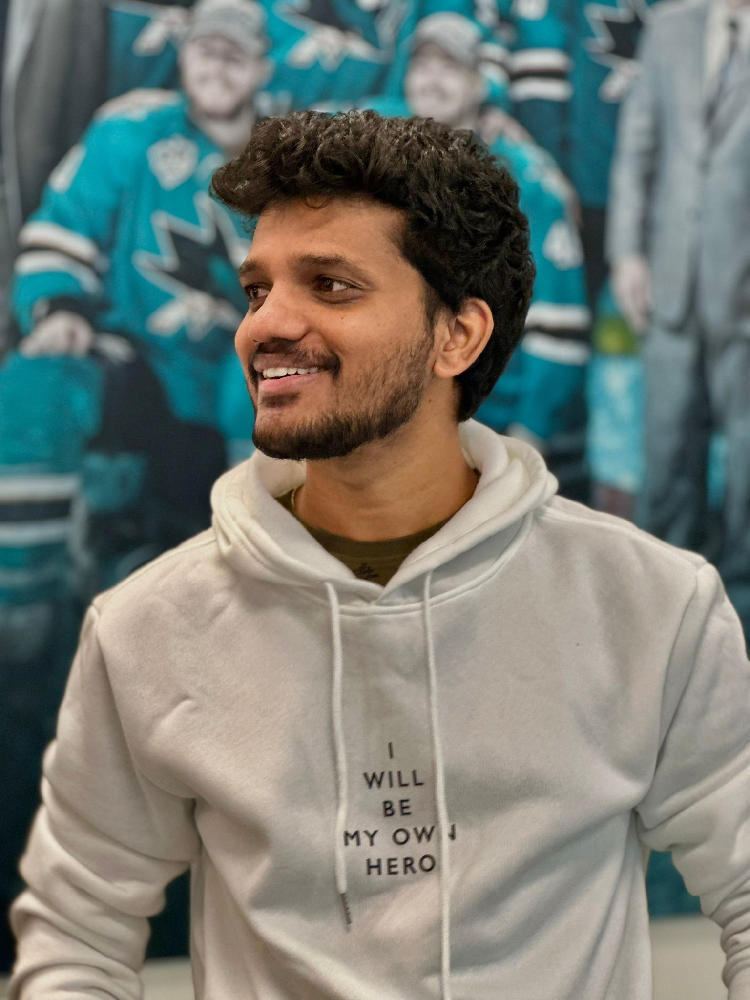

Software Developer | 5+ Years Experience | LLMs, AI, Full-Stack, Cloud
I am a full-stack developer with over 5 years of experience designing, developing, and deploying scalable web applications. Currently, I focus on advanced projects integrating Large Language Models (LLMs) and AI, such as building intelligent chatbots, Retrieval-Augmented Generation (RAG) pipelines using LangChain and Ollama, and developing Java-based ML tools for code automation. My expertise spans backend development with Spring Boot and Django, dynamic frontend development with React and Angular, and cloud deployments on AWS and Azure.
University of Nebraska at Omaha – January 2023 to Present
Leading development on healthcare applications with integrated AI capabilities. I build Django-based systems with LLM-powered chatbots and RAG pipelines, containerize applications using Docker, and implement CI/CD pipelines on AWS. Additionally, I spearheaded a Java-based ML project for source code automation, processing large-scale data to enhance model performance.
Infosys, Hyderabad – May 2020 to December 2022
Developed enterprise web applications using Java Spring Boot and React. Enhanced e-commerce platforms by optimizing UI layouts, integrating RESTful APIs, and managing end-to-end deployments. Collaborated in a dynamic team to deliver scalable, high-performance solutions.
Developed an intelligent chatbot integrated with a Retrieval-Augmented Generation pipeline using AWS Bedrock, SageMaker, LangChain, and Ollama. This system powers dynamic Q&A functionality for the mHealth platform.
Created a Django-based application to manage shared expenses. The app auto-generates monthly CSV summaries and leverages LLMs to analyze spending patterns, offering actionable financial insights.
Built a Spring Boot application that uses historical weather data and linear regression to predict temperature, humidity, and rainfall. REST APIs deliver forecasts to a dynamic, responsive frontend.
Developed a Django NLP application that extracts key variables from physics questions, maps them to relevant formulas, and generates step-by-step solutions. The interface is styled with Bootstrap for an intuitive user experience.
Languages: Java, Python, C#, JavaScript, TypeScript
Web Development: React, Angular, Bootstrap, Tailwind, HTML, CSS
Back End Frameworks: Spring Boot, Django
Database: SQL Server, MySQL, MongoDB, PostgreSQL
Cloud & DevOps: AWS (EC2, S3, CodePipeline, SageMaker, Bedrock), Azure, Docker, Kubernetes, CI/CD
AI & ML: LLMs, LangChain, Ollama, RAG, Machine Learning
January 2023 - December 2024, Nebraska
CGPA: 3.8/4.0
August 2016 - September 2020, Hyderabad
CGPA: 7.8/10